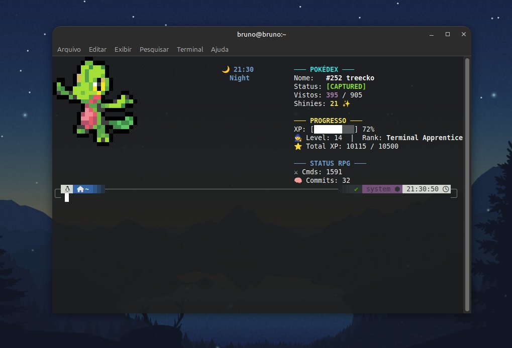

Terminomon-RPG
Uma ferramenta de produtividade gamificada que transforma o terminal Linux (Zsh) num sistema de progressão contínua. O software monitoriza comandos executados e commits de Git em tempo real, convertendo o fluxo de trabalho do programador em experiência (XP), patentes de engenharia e capturas automatizadas numa Pokédex integrada.